Interaktive Visualiseringer til Videnskabelig Formidling
Hvordan matematiske modeller gøres forståelige ved hjælp af interaktive simuleringer
IDA webinar, 28. maj 2020
Udfordringer med videnskabelig formidling
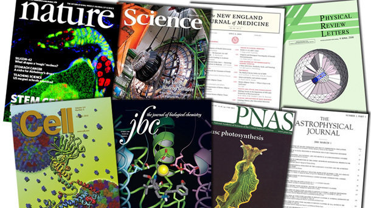 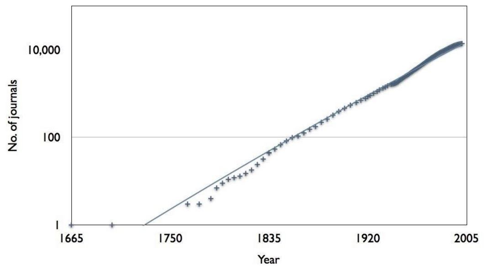Videnskabelige resultater har betydning for verden omkring os.
Det er op til forskerne selv at kunne formidle deres forskning på en forståelig måde!
Min vinkel
Ph.D.-studerende i matematik på Roskilde Universitet.
Samarbejde med læger fra Roskilde Hospital.
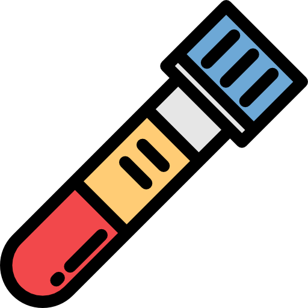 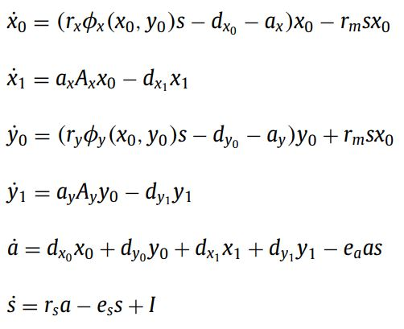 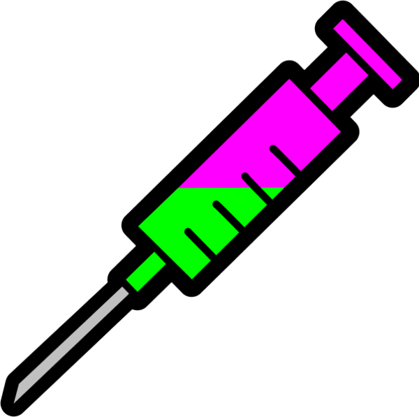
En stor udfordring: Jeg er ikke læge.
En større udfordring: Lægerne er ikke mig.
Interaktive simuleringer
To konkrete eksempler.
Baseret på / inspireret af matematiske modeller.
- Væksten af en cancertumor.
- Sygdomsspredning.
Formål: Post på "Matematisk cancer-forskning" blog.
Formål: Undervisning og rekruttering af gymnasieelever.
Matematisk model af cancertumorvækst
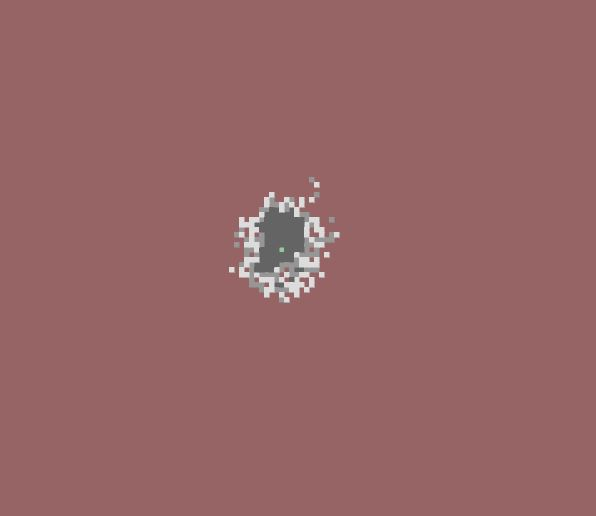
 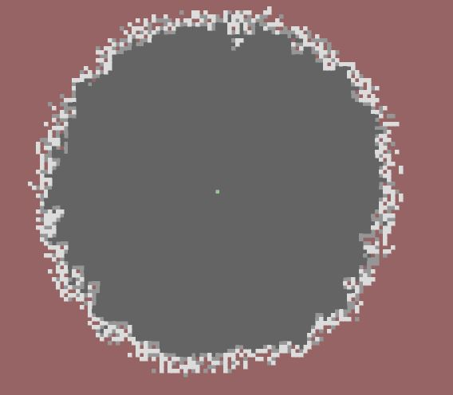
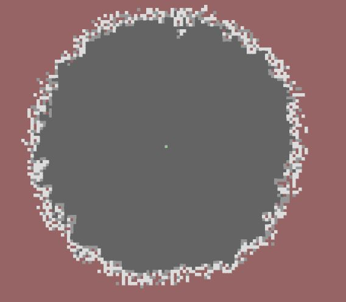
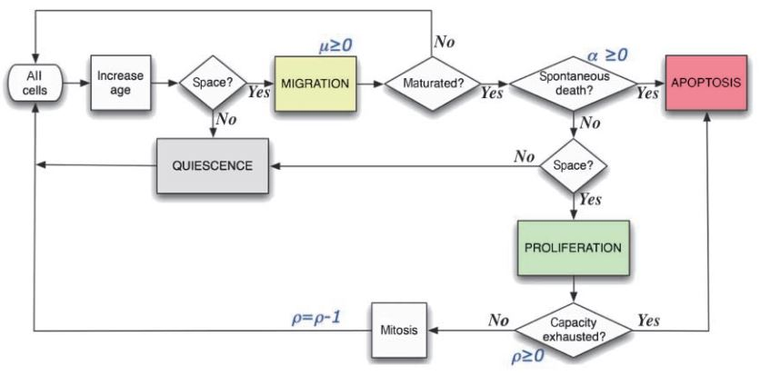
 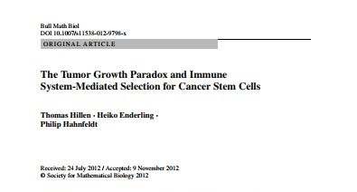
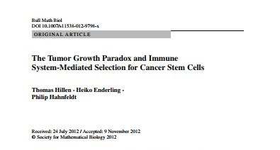
Interaktiv simulering af tumorvækst.
Matematisk modellering af sygdomsspredning
Matematik der beskriver hvordan en sygdom spredes i en population.
Forskellige modeller til en lang række sygdomme, heriblandt Covid-19, Ebola og mæslinger.
Klassiskeren: SIR modellen (Susceptible, Infected og Recovered).
Aldrig været vigtigere at kunne formidle det!
Interaktiv simulering af sygdomsspredning
Afsluttende kommentarer
Videnskabelig formidling har aldrig været vigtigere for samfundet.
Kreative måder er visualisere matematikken på er nødvendige.
IT-værktøjer der gør det nemmere at udvikle visualiseringer er utroligt nyttige (f.eks. Processing, p5.js, manim, samt andre).
Værdien af gode visualiseringer ses verden rundt:
- De fleste nyhedsmediers Coronavirus dækning.
- Washington Post "Corona-Simulator".
- Artistoo, simulering af celler i din browser.
- 3Blue1Brown på Youtube.